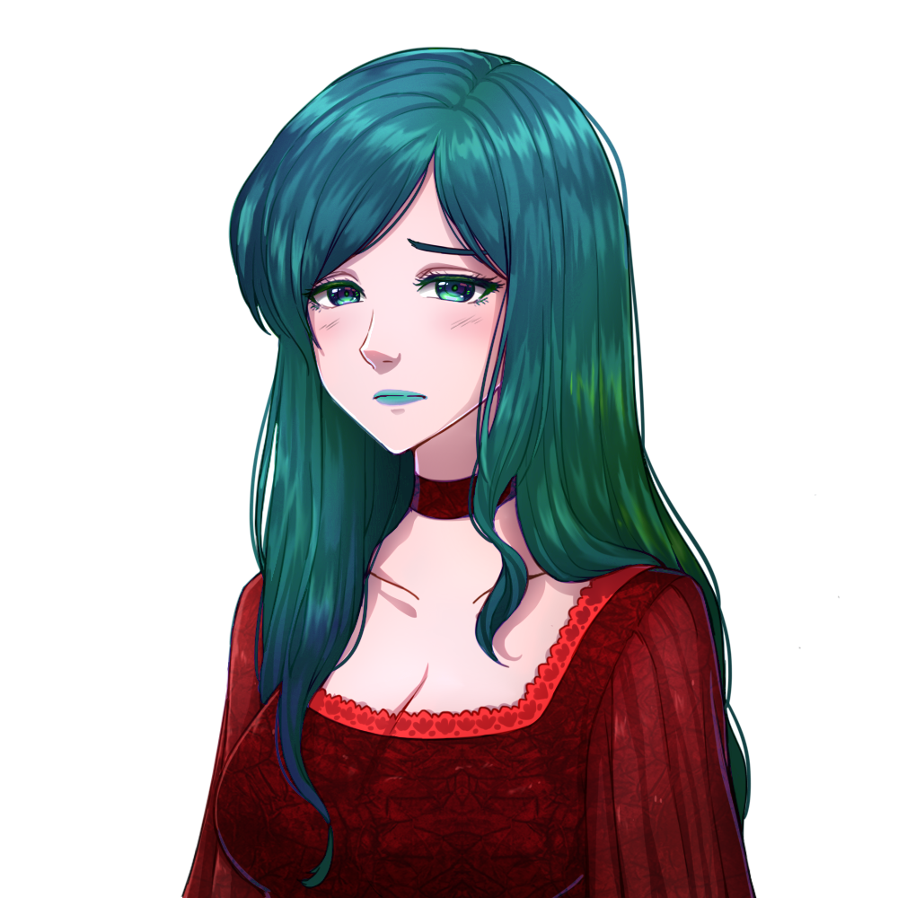

so many things have happened this year and I dunno how to put them all in a single blogpost like this, but welcome to my first-ever!!
it took me quite a while to figure out how to deal with oxalorg/sakura cuz I've been eager to
use it.. and now, I might customize it in the near future!!
don't know who I am? my name is thebelovedmoon, known for a lot of things incl. frontend, composer, author, and resident vtuber!! prominent nickname is 💚🍃Aga-chuu💗🌸, wc goes a looooong way back with mama Suzu saying it for the first time!! it's been a staple of what I do for the vtuber community since my first invocation on July 2022.
 — original asset by Horror Shop Games, edited by me
hopefully more stuff in the future!! (if I'm not bz tho..)
published